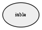

MAPCREATOR_RAWLOGFILE The path to a rawlog file to be proecessed by the MapCrator App
Variable graph:

Detailed description:
MAPCREATOR_RAWLOGFILE The path to a rawlog file to be proecessed by the MapCrator AppIf NOT found = NODE_POSITION "petitionID NOTFOUND"IF found = NODE_POSITION "petitoinID x y"
Page generated by Mooxygen 1.1.0 at Thu Jan 22 11:30:21 2015